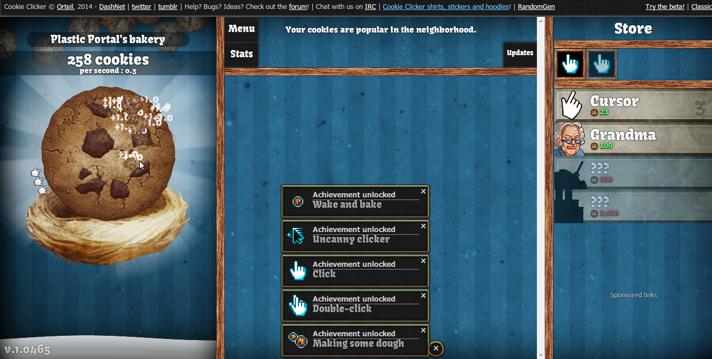
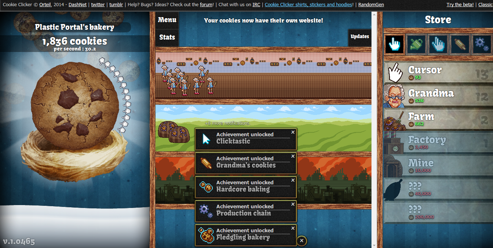

Do you know games like cookie clicker where you only have to click a lot?
{kind=link}

You can do that automatically with the following Python script.
Just execute xdotool getmouselocation --shell before that to find the
position of your mouse.
#!/usr/bin/env python
"""Tool to make automatic clicks VERY fast (useful for idle games)."""
import os
import time
import random
def main(clicks, twiggle, x, y, delay):
for i in range(clicks):
xrand = random.randint(-twiggle, twiggle)
yrand = random.randint(-twiggle, twiggle)
xpos, ypos = x + xrand, y + yrand
os.system("xdotool mousemove %i %i click 1" % (xpos, ypos))
if delay > 0:
time.sleep(delay)
if __name__ == "__main__":
from argparse import ArgumentParser
parser = ArgumentParser()
# Add more options if you like
parser.add_argument(
"-c",
"--clicks",
dest="clicks",
help="number of clicks that will be done",
default=500,
type=int,
)
parser.add_argument(
"-t",
"--twiggle",
dest="twiggle",
help="how much should the cursor move randomly",
default=50,
type=int,
)
parser.add_argument(
"-x", dest="x", help="x coordinate where to click", default=711, type=int
)
parser.add_argument(
"-y", dest="y", help="y coordinate where to click", default=467, type=int
)
parser.add_argument(
"--delay", dest="delay", help="delay between clicks", default=0.01, type=float
)
args = parser.parse_args()
main(args.clicks, args.twiggle, args.x, args.y, args.delay)
{kind=link}

Have fun playing those games now!